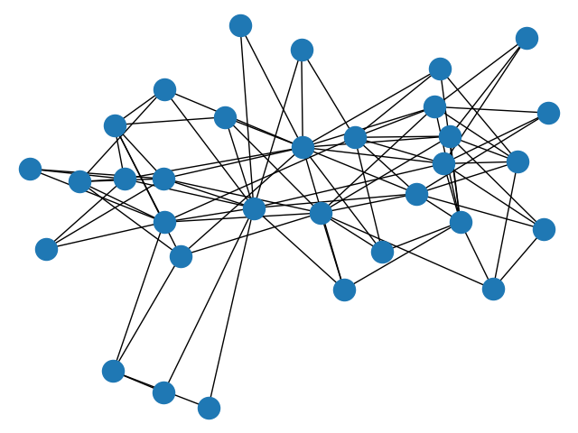

Note
Click here to download the full example code
Davis Club¶
Davis Southern Club Women
Shows how to make unipartite projections of the graph and compute the properties of those graphs.
These data were collected by Davis et al. in the 1930s. They represent observed attendance at 14 social events by 18 Southern women. The graph is bipartite (clubs, women).
Out:
Biadjacency matrix
(0, 0) 1
(0, 1) 1
(0, 2) 1
(0, 3) 1
(0, 4) 1
(0, 5) 1
(0, 7) 1
(0, 8) 1
(1, 0) 1
(1, 1) 1
(1, 2) 1
(1, 4) 1
(1, 5) 1
(1, 6) 1
(1, 7) 1
(2, 1) 1
(2, 2) 1
(2, 3) 1
(2, 4) 1
(2, 5) 1
(2, 6) 1
(2, 7) 1
(2, 8) 1
(3, 0) 1
(3, 2) 1
: :
(12, 7) 1
(12, 8) 1
(12, 9) 1
(12, 11) 1
(12, 12) 1
(12, 13) 1
(13, 5) 1
(13, 6) 1
(13, 8) 1
(13, 9) 1
(13, 10) 1
(13, 11) 1
(13, 12) 1
(13, 13) 1
(14, 6) 1
(14, 7) 1
(14, 9) 1
(14, 10) 1
(14, 11) 1
(15, 7) 1
(15, 8) 1
(16, 8) 1
(16, 10) 1
(17, 8) 1
(17, 10) 1
#Friends, Member
17 Evelyn Jefferson
15 Laura Mandeville
17 Theresa Anderson
15 Brenda Rogers
11 Charlotte McDowd
15 Frances Anderson
15 Eleanor Nye
16 Pearl Oglethorpe
17 Ruth DeSand
17 Verne Sanderson
16 Myra Liddel
16 Katherina Rogers
17 Sylvia Avondale
17 Nora Fayette
17 Helen Lloyd
16 Dorothy Murchison
12 Olivia Carleton
12 Flora Price
#Friend meetings, Member
50 Evelyn Jefferson
45 Laura Mandeville
57 Theresa Anderson
46 Brenda Rogers
24 Charlotte McDowd
32 Frances Anderson
36 Eleanor Nye
31 Pearl Oglethorpe
40 Ruth DeSand
38 Verne Sanderson
33 Myra Liddel
37 Katherina Rogers
46 Sylvia Avondale
43 Nora Fayette
34 Helen Lloyd
24 Dorothy Murchison
14 Olivia Carleton
14 Flora Price
import matplotlib.pyplot as plt
import networkx as nx
import networkx.algorithms.bipartite as bipartite
G = nx.davis_southern_women_graph()
women = G.graph['top']
clubs = G.graph['bottom']
print("Biadjacency matrix")
print(bipartite.biadjacency_matrix(G, women, clubs))
# project bipartite graph onto women nodes
W = bipartite.projected_graph(G, women)
print('')
print("#Friends, Member")
for w in women:
print('%d %s' % (W.degree(w), w))
# project bipartite graph onto women nodes keeping number of co-occurence
# the degree computed is weighted and counts the total number of shared contacts
W = bipartite.weighted_projected_graph(G, women)
print('')
print("#Friend meetings, Member")
for w in women:
print('%d %s' % (W.degree(w, weight='weight'), w))
nx.draw(G)
plt.show()
Total running time of the script: ( 0 minutes 0.148 seconds)